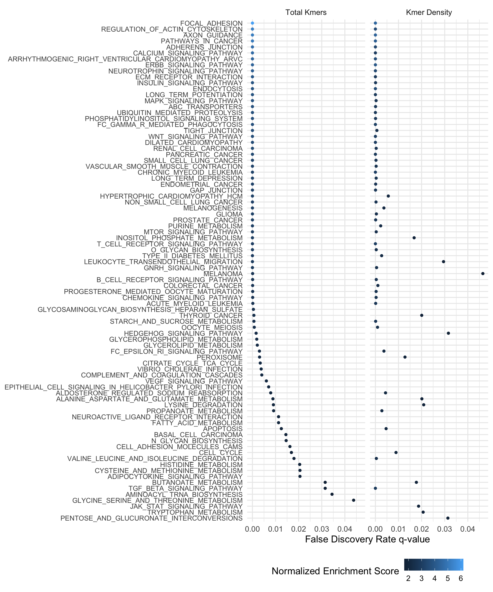
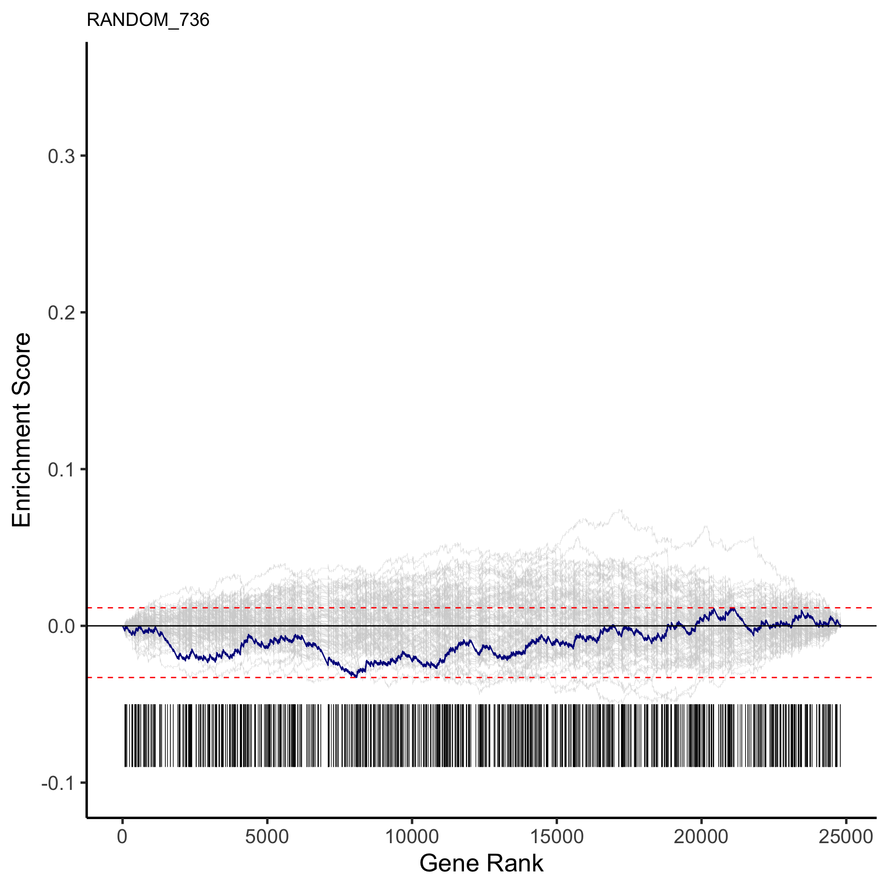
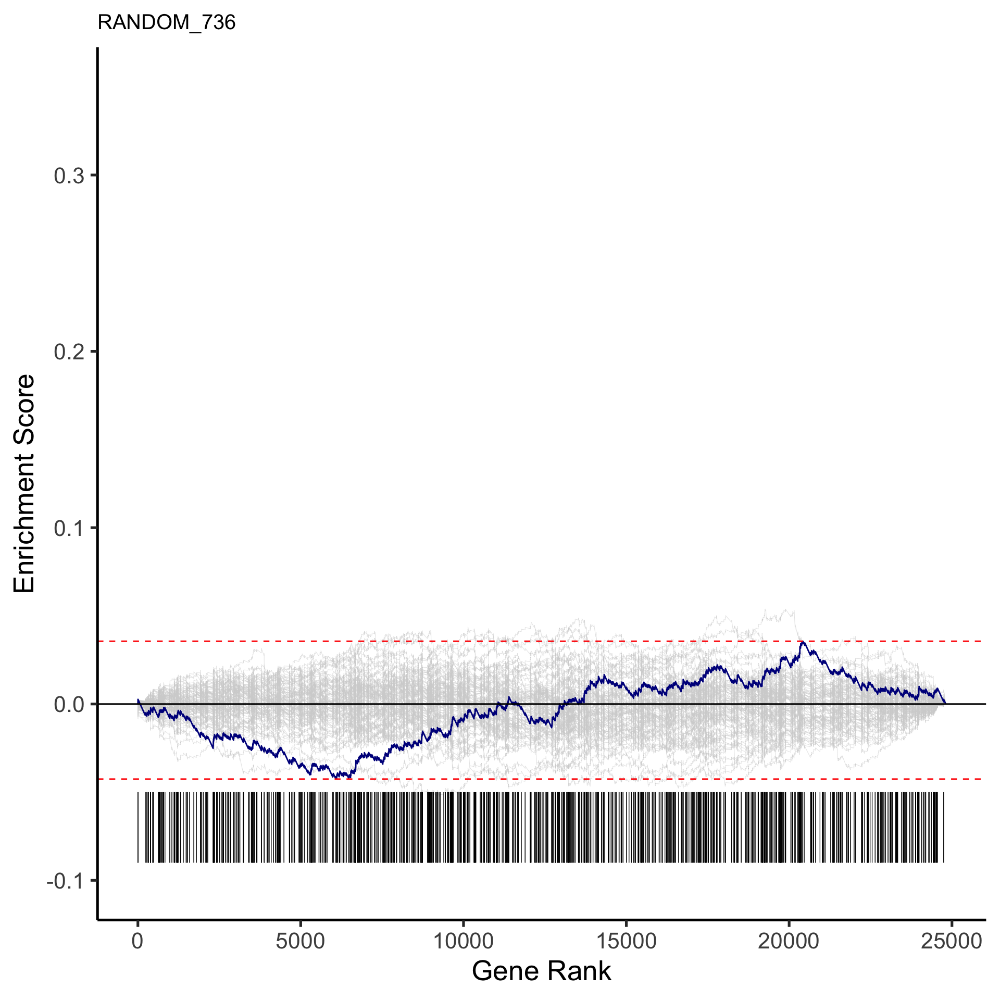
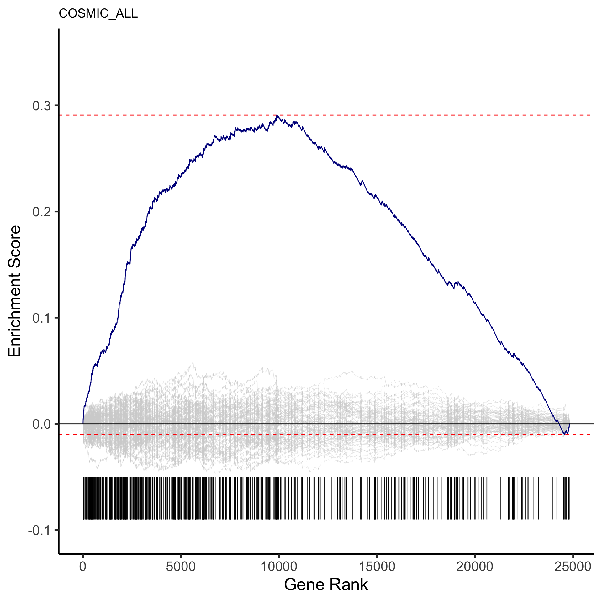
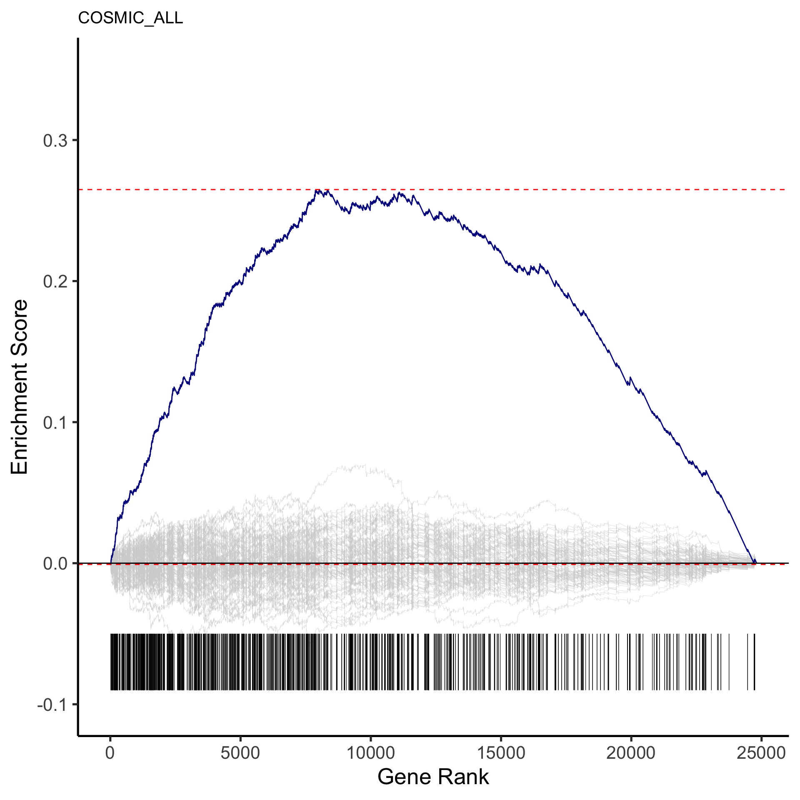
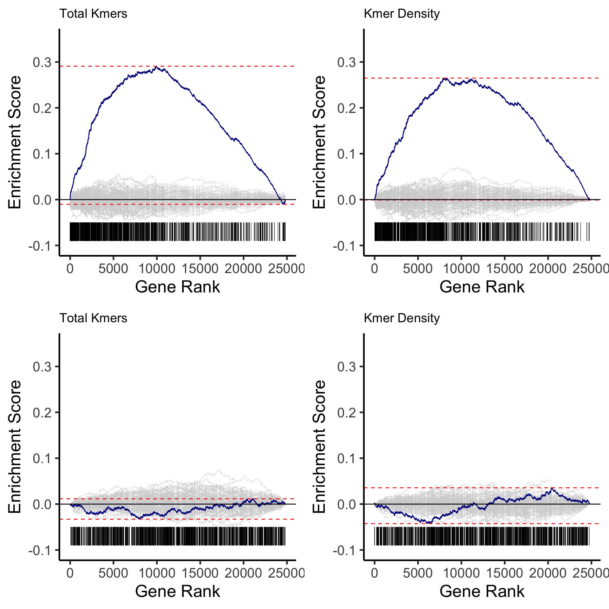

Last updated: 2023-12-22
Checks: 6 1
Knit directory:
annapragada2024_artemis_code/
This reproducible R Markdown analysis was created with workflowr (version 1.6.2). The Checks tab describes the reproducibility checks that were applied when the results were created. The Past versions tab lists the development history.
The R Markdown is untracked by Git. To know which version of the R
Markdown file created these results, you’ll want to first commit it to
the Git repo. If you’re still working on the analysis, you can ignore
this warning. When you’re finished, you can run
wflow_publish to commit the R Markdown file and build the
HTML.
Great job! The global environment was empty. Objects defined in the global environment can affect the analysis in your R Markdown file in unknown ways. For reproduciblity it’s best to always run the code in an empty environment.
The command set.seed(20231222) was run prior to running
the code in the R Markdown file. Setting a seed ensures that any results
that rely on randomness, e.g. subsampling or permutations, are
reproducible.
Great job! Recording the operating system, R version, and package versions is critical for reproducibility.
Nice! There were no cached chunks for this analysis, so you can be confident that you successfully produced the results during this run.
Great job! Using relative paths to the files within your workflowr project makes it easier to run your code on other machines.
Great! You are using Git for version control. Tracking code development and connecting the code version to the results is critical for reproducibility.
The results in this page were generated with repository version 1d0c4f5. See the Past versions tab to see a history of the changes made to the R Markdown and HTML files.
Note that you need to be careful to ensure that all relevant files for
the analysis have been committed to Git prior to generating the results
(you can use wflow_publish or
wflow_git_commit). workflowr only checks the R Markdown
file, but you know if there are other scripts or data files that it
depends on. Below is the status of the Git repository when the results
were generated:
Ignored files:
Ignored: code/.DS_Store
Ignored: data/.DS_Store
Ignored: output/.DS_Store
Untracked files:
Untracked: analysis/Fig2a_S11_S16.Rmd
Untracked: analysis/Fig2b_S7.Rmd
Untracked: analysis/Fig2c_S8a.Rmd
Untracked: analysis/Fig2d_S10_LINE1.Rmd
Untracked: analysis/Fig2e_S13.Rmd
Untracked: analysis/Fig3a.Rmd
Untracked: analysis/Fig3b.Rmd
Untracked: analysis/Fig4_Epi.Rmd
Untracked: analysis/Fig5_LUCAS.Rmd
Untracked: analysis/SessionInfo.Rmd
Untracked: analysis/figS12.Rmd
Untracked: analysis/figS14.Rmd
Untracked: analysis/figS15.Rmd
Untracked: analysis/figS17.Rmd
Untracked: analysis/figS18_epi.Rmd
Untracked: analysis/figS20_Ideogram.Rmd
Untracked: analysis/figS21a_featureimp.Rmd
Untracked: analysis/figS21bc_stability.Rmd
Untracked: analysis/figS22_liver.Rmd
Untracked: analysis/figS23_24_lungval.Rmd
Untracked: analysis/figS25.Rmd
Untracked: analysis/figS2_S3abc.Rmd
Untracked: analysis/figS3d_S4.Rmd
Untracked: analysis/figS5_S6_simulations.Rmd
Untracked: analysis/figS8bc.Rmd
Untracked: analysis/figS9.Rmd
Untracked: code/ARTEMIS_Pipeline/
Untracked: code/Table1.Rmd
Untracked: code/Table2.Rmd
Untracked: code/Tissue_Models/
Untracked: code/cfDNA_Models/
Untracked: code/rlucas/
Untracked: code/useful.stuff.aa/
Untracked: data/CN_Analysis/
Untracked: data/Cristiano_Detection/
Untracked: data/Cristiano_TOO/
Untracked: data/Downsamples/
Untracked: data/Epi/
Untracked: data/Epi_Reference_Bins.csv
Untracked: data/Extended Data Fig.12_recurrence_analysis_Mathios_etal.xlsx
Untracked: data/Final_LUCAS_Ensemble/
Untracked: data/Final_Liver_Risk_Ensemble/
Untracked: data/GSEA/
Untracked: data/Get_Numbers/
Untracked: data/Kmer_Distributions/
Untracked: data/LINE1/
Untracked: data/LUCAS_Stability_Analysis/
Untracked: data/Liver_Published_delfi-results_risk.csv
Untracked: data/Lung_Monitoring/
Untracked: data/Mathios_Published/
Untracked: data/Mathios_batching.xlsx
Untracked: data/NoveltyTables/
Untracked: data/PCAWG/
Untracked: data/Plasma_CV_meta_HiSeq.csv
Untracked: data/Plasma_CV_meta_Novaseq.csv
Untracked: data/Simulation/
Untracked: data/Supp_Tables/
Untracked: data/TCGA/
Untracked: data/cfDNA_manifest_HiSeq.txt
Untracked: data/focal_pcawg/
Untracked: data/lucas_nova_artemis.csv
Untracked: data/process_pcawg/
Unstaged changes:
Modified: README.md
Modified: analysis/about.Rmd
Modified: analysis/index.Rmd
Modified: analysis/license.Rmd
Deleted: output/README.md
Note that any generated files, e.g. HTML, png, CSS, etc., are not included in this status report because it is ok for generated content to have uncommitted changes.
There are no past versions. Publish this analysis with
wflow_publish() to start tracking its development.
library(dplyr)
Attaching package: 'dplyr'The following objects are masked from 'package:stats':
filter, lagThe following objects are masked from 'package:base':
intersect, setdiff, setequal, unionlibrary(devtools)Loading required package: usethislibrary(here)here() starts at /Users/akshayaannapragada/Dropbox/ScannedNotes/VelculescuLab/Cancer Genomics Lab/plasma_repeats/annapragada2024_artemis_codeload_all(here("code","useful.stuff.aa")) # Loadℹ Loading useful.stuff.aalibrary(tidyverse)── Attaching packages ─────────────────────────────────────── tidyverse 1.3.1 ──✔ ggplot2 3.3.5 ✔ purrr 0.3.4
✔ tibble 3.1.6 ✔ stringr 1.4.0
✔ tidyr 1.2.0 ✔ forcats 0.5.1
✔ readr 2.0.1 ── Conflicts ────────────────────────────────────────── tidyverse_conflicts() ──
✖ dplyr::filter() masks stats::filter()
✖ dplyr::lag() masks stats::lag()library(data.table)
Attaching package: 'data.table'The following object is masked from 'package:purrr':
transposeThe following objects are masked from 'package:dplyr':
between, first, lastlibrary(readxl)
library(ggplot2)
library(corrplot)corrplot 0.90 loadedKegg supplement 
COSMIC functions
library(ggpubr)
library(fgsea)
set.seed(42)
# Make custom GSEA plot
custom_enrichment <- function(ranks, genes, ylims, title=''){
library(ggplot2)
prep_df <- function(peaks, ids){
tar_ranges <- 2:(length(peaks$tops) - 1)
x <- rep(ids, each=2)
y <- rbind(peaks$bots[tar_ranges], peaks$top[tar_ranges]) %>%
c()
data.frame(x=c(0, length(ranks), x), y=c(0, 0, y))
}
# Prep data
ranks <- sort(ranks, decreasing=T)
ids <- genes %>%
intersect(names(ranks)) %>%
match(names(ranks)) %>%
sort()
peaks <- custom_get_peaks(ranks, ids)
df <- prep_df(peaks, ids)
# Generate plot with real data
p <- ggplot(df, aes(x=x, y=y)) +
geom_line(color="dark blue") +
geom_hline(yintercept=max(df$y), colour="red", linetype="dashed") +
geom_hline(yintercept=min(df$y), colour="red", linetype="dashed") +
geom_hline(yintercept=0, colour="black") +
theme_classic(base_size=20) +
geom_segment(data=df[-1:-2, ], mapping=aes(x=x, y=ylims[1]+.01, xend=x, yend=ylims[1]+0.05), size=0.2) +
theme(plot.title = element_text(size=15)) +
labs(x="Gene Rank", y="Enrichment Score", title=title) +
ylim(ylims[1], ylims[2])
# Add lines for random permutations
for(i in 1:100){
new_ids <- sample(1:length(ranks), length(ids)) %>%
sort()
peaks <- custom_get_peaks(ranks, new_ids)
df <- prep_df(peaks, ids)
p$layers <- c(geom_line(data=df, color='light grey', size=.1), p$layers)
}
p
}
custom_calc_gsea_stats <- function(ranks, ids, nperm=0){
# Get peaks and leading edge genes
peaks <- custom_get_peaks(ranks, ids)
if(peaks$stat > 0){
mid <- which(peaks$tops == peaks$stat) %>%
na.omit() %>%
head(1)
le <- names(peaks$tops)[1:mid] %>%
na.omit()
} else {
mid <- which(peaks$bots == peaks$stat) %>%
na.omit() %>%
tail(1)
le <- names(peaks$bots)[length(peaks$bots):mid] %>%
na.omit()
}
outs <- list(Leading.Edge=le, Enrichment.Score=peaks$stat)
# Calculate pval if nperm defined
if(nperm != 0){
stats <- sapply(1:nperm, function(x){
new_ids <- sample(1:length(ranks), length(ids)) %>%
sort()
custom_get_peaks(ranks, new_ids)$stat
})
n_greater <- sum(abs(stats) > abs(peaks$stat))
if(n_greater == 0) n_greater <- 1
outs$P <- n_greater / nperm
}
outs
}
custom_get_peaks <- function(ranks, ids){
# Sort ids
ids <- sort(ids)
# Get correct step size for enrichment scores
step_up <- 1 / length(ids)
step_dn <- 1 / (length(ranks))
# Calculate enrichment scores before and after each hit
tops <- 0
bots <- 0
prev_id <- 1
for(id in ids){
bots <- c(bots, tail(tops, 1) + step_dn * (prev_id - id))
tops <- c(tops, tail(bots, 1) + step_up)
prev_id <- id
}
tops <- c(tops, 0)
bots <- c(bots, 0)
# Calc stat as the min/max of bot/top
names(tops) <- names(bots) <- c(NA, names(ranks)[ids], NA)
stat <- ifelse(abs(min(bots)) > max(tops), min(bots), max(tops))
# Return
list(tops=tops, bots=bots, stat=stat)
}
custom_gsea <- function(ranks, sets){
# Prep to run
df <- c()
ranks <- sort(ranks, decreasing=T)
# Step through each set
for(set in names(sets)){
# Get index of genes in pathway
ids <- sets[[set]] %>%
intersect(names(ranks)) %>%
match(names(ranks)) %>%
sort()
# Calc relevant GSEA info and add to data frame
gsea <- custom_calc_gsea_stats(ranks, ids, 1e4)
df <- rbind(df, tibble(Gene.Set=set, P.val=gsea$P,
Enrichment.Score=gsea$Enrichment.Score,
Leading.Edge=list(gsea$Leading.Edge)))
}
# Finalize analyses and return
df$P.adj <- p.adjust(df$P.val, 'BH')
df
}
# Make GSEA plots for all ranks for given pathways
compare_gsea_plots <- function(path, sets, all_ranks, ylims){
plots <- lapply(1:length(all_ranks), function(i){
custom_enrichment(all_ranks[[i]], sets[[path]], ylims,
paste(names(all_ranks)[i]))
})
title <- gsub('_', ' ', path, fixed=T) %>%
str_to_title()
ggarrange(plotlist=plots, ncol=2, nrow=2) %>%
annotate_figure(top=text_grob(title, size=20)) %>%
print()
return()
}
################################################################################
# Generate GSEA plots from Akshaya's results
################################################################################
get_ranks <- function(file){
tab <- read.table(file, sep='\t', header=F)
ranks <- as.integer(tab$V2)
names(ranks) <- tab$V1
return(ranks)
}
Attaching package: 'cowplot'The following object is masked from 'package:ggpubr':
get_legend
sessionInfo()R version 4.0.5 (2021-03-31)
Platform: x86_64-apple-darwin17.0 (64-bit)
Running under: macOS Big Sur 10.16
Matrix products: default
BLAS: /Library/Frameworks/R.framework/Versions/4.0/Resources/lib/libRblas.dylib
LAPACK: /Library/Frameworks/R.framework/Versions/4.0/Resources/lib/libRlapack.dylib
locale:
[1] en_US.UTF-8/en_US.UTF-8/en_US.UTF-8/C/en_US.UTF-8/en_US.UTF-8
attached base packages:
[1] stats graphics grDevices utils datasets methods base
other attached packages:
[1] cowplot_1.1.1 fgsea_1.16.0
[3] ggpubr_0.4.0 corrplot_0.90
[5] readxl_1.3.1 data.table_1.14.0
[7] forcats_0.5.1 stringr_1.4.0
[9] purrr_0.3.4 readr_2.0.1
[11] tidyr_1.2.0 tibble_3.1.6
[13] ggplot2_3.3.5 tidyverse_1.3.1
[15] useful.stuff.aa_0.0.0.9000 here_1.0.1
[17] devtools_2.4.2 usethis_2.0.1
[19] dplyr_1.0.8 workflowr_1.6.2
loaded via a namespace (and not attached):
[1] fs_1.5.0 lubridate_1.7.10 httr_1.4.2
[4] rprojroot_2.0.2 tools_4.0.5 backports_1.2.1
[7] bslib_0.3.0 utf8_1.2.2 R6_2.5.1
[10] DBI_1.1.1 colorspace_2.0-2 withr_2.5.0
[13] gridExtra_2.3 tidyselect_1.1.1 prettyunits_1.1.1
[16] processx_3.5.2 curl_4.3.2 compiler_4.0.5
[19] git2r_0.28.0 cli_3.6.1 rvest_1.0.1
[22] xml2_1.3.2 desc_1.3.0 labeling_0.4.2
[25] sass_0.4.0 scales_1.2.1 callr_3.7.0
[28] digest_0.6.27 foreign_0.8-81 rmarkdown_2.10
[31] rio_0.5.27 pkgconfig_2.0.3 htmltools_0.5.2
[34] sessioninfo_1.1.1 highr_0.9 dbplyr_2.1.1
[37] fastmap_1.1.0 rlang_1.1.1 rstudioapi_0.13
[40] jquerylib_0.1.4 generics_0.1.0 farver_2.1.0
[43] jsonlite_1.7.2 BiocParallel_1.24.1 zip_2.2.0
[46] car_3.0-11 magrittr_2.0.1 Matrix_1.3-4
[49] Rcpp_1.0.7 munsell_0.5.0 fansi_0.5.0
[52] abind_1.4-5 lifecycle_1.0.3 stringi_1.7.4
[55] yaml_2.2.1 carData_3.0-4 pkgbuild_1.2.0
[58] grid_4.0.5 parallel_4.0.5 promises_1.2.0.1
[61] crayon_1.4.1 lattice_0.20-44 haven_2.4.3
[64] hms_1.1.0 knitr_1.33 ps_1.6.0
[67] pillar_1.6.2 ggsignif_0.6.2 pkgload_1.2.1
[70] fastmatch_1.1-3 reprex_2.0.1 glue_1.6.2
[73] evaluate_0.14 remotes_2.4.0 modelr_0.1.8
[76] vctrs_0.4.0 tzdb_0.1.2 httpuv_1.6.2
[79] testthat_3.0.4 cellranger_1.1.0 gtable_0.3.0
[82] assertthat_0.2.1 cachem_1.0.6 openxlsx_4.2.4
[85] xfun_0.25 broom_0.7.9 rstatix_0.7.0
[88] later_1.3.0 memoise_2.0.0 ellipsis_0.3.2